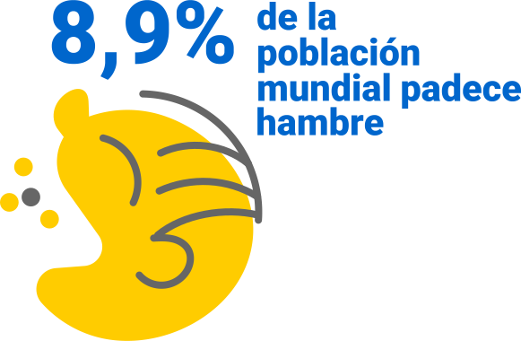

Tras décadas de una disminución constante, el número de personas que padecen hambre (medido por la prevalencia de desnutrición) comenzó a aumentar lentamente de nuevo en 2015. Las estimaciones actuales indican que cerca de 690 millones de personas en el mundo padecen hambre, es decir, el 8,9 por ciento de la población mundial, lo que supone un aumento de unos 10 millones de personas en un año y de unos 60 millones en cinco años.
